L-01
Criatividade & resolução de problemas
Recombinação de repertórios, variabilidade operante, enriquecimento ambiental e síntese de processos comportamentais como origem do novo — em ratos, crianças e cultura.
O CRIACOM investiga como processos comportamentais dão origem ao novo — e como contingências sociais produzem, distribuem e sustentam a desinformação. Na fronteira entre ciência básica, psicoterapia e design de jogos.
O que seria a câmara operante mais sofisticada já construída? Não um laboratório — mas o celular no seu bolso. Neste webinar para a maior associação internacional de análise do comportamento, Hernando Neves Filho argumenta que a Internet evoluiu de páginas estáticas para arquiteturas embebidas em IA que organizam contingências de reforço em escala global. A apresentação conecta pesquisa básica com modelos animais de criatividade à pesquisa aplicada sobre desinformação no STF, propondo que analistas do comportamento estão em posição privilegiada para interpretar e intervir nos ambientes digitais contemporâneos.
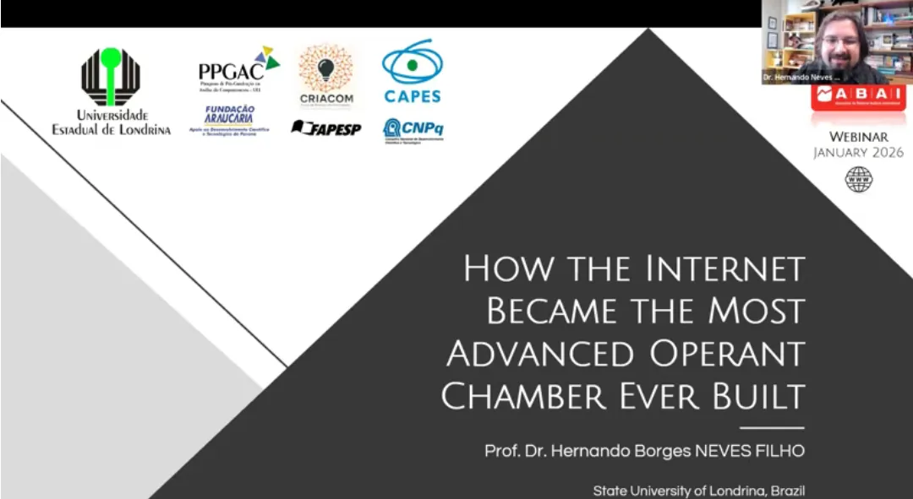
Recombinação de repertórios, variabilidade operante, enriquecimento ambiental e síntese de processos comportamentais como origem do novo — em ratos, crianças e cultura.
Análise comportamental do compartilhamento de fake news, persuasão, vieses de atribuição e aceitação de conteúdos falsos em comunidades online.
Jogos, videogames e RPGs como ferramentas terapêuticas, de ensino e de investigação experimental — design a partir da análise do comportamento.
Ano com o maior número de pesquisas simultâneas na história do laboratório e início da parceria de pós-doutorado FAPESP-USP-UEL.
Expansão da equipe de mestrado, consolidação da pesquisa básica sobre criatividade com ratos e crescimento da linha de desinformação.
Estruturação da "Equipe Protocolos" para pesquisa aplicada e início da parceria com o Laboratório de Ecologia Animal (LECA-UEL).
Consolidação da pesquisa com ratos, entrada da linha de desinformação via metacontingências e início do programa PROIC-Jr no ensino médio.
A primeira geração do CRIACOM: três mestrados pioneiros, duas iniciações científicas e dois projetos de IC do ensino básico definindo os primeiros contornos do laboratório.
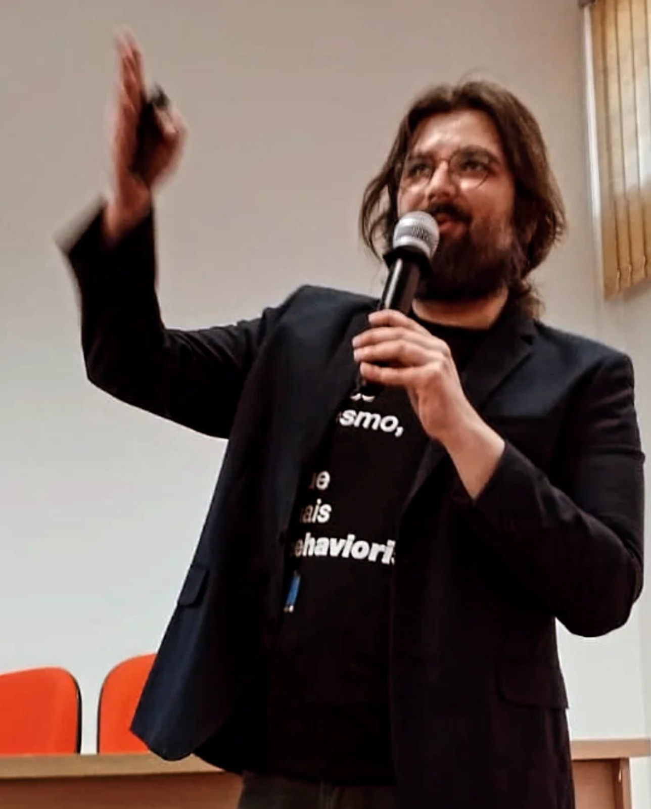
Bacharel em Psicologia pela UFPA, mestre pelo PPG em Teoria e Pesquisa do Comportamento (UFPA) e doutor em Psicologia Experimental pela USP. Realizou doutorado sanduíche na University of Auckland (Nova Zelândia) e dois pós-doutorados — na PUC-GO (CAPES/FAPEG) e na UFPA (PNPD/CAPES). Professor efetivo do Departamento de Psicologia Geral e Análise do Comportamento da UEL desde 2021, orientador de mestrado e doutorado no PPG-AC.
Graduada em Psicologia pela USP (2012), mestre em Psicologia Experimental com foco em farmacologia comportamental pela USP (2016) e doutora em Neurociências e Comportamento pela USP (2021), com período sanduíche na Universität Regensburg (Alemanha, 2018–2019), onde estudou interações entre ansiedade, hormônios do estresse e resolução de problemas. Também foi pesquisadora visitante na University of Auckland (Nova Zelândia), estudando resolução de problemas e evolução convergente em corvos. Desde 2022 desenvolve pós-doutorado na UEL (CAPES) investigando o papel do controle de estímulos durante a resolução de problemas do tipo Insight.
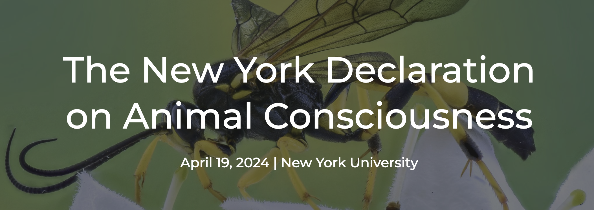
Publicada na NYU em 19 de abril de 2024, a New York Declaration on Animal Consciousness afirma haver forte suporte empírico para experiências conscientes em mamíferos e aves, e ao menos a possibilidade realista em todos os vertebrados e muitos invertebrados. Ambos os pesquisadores do CRIACOM-UEL são signatários, em reconhecimento às suas contribuições à Psicologia Animal Comparada — com ratos, macacos-prego, pombos e corvos da Nova Caledônia.
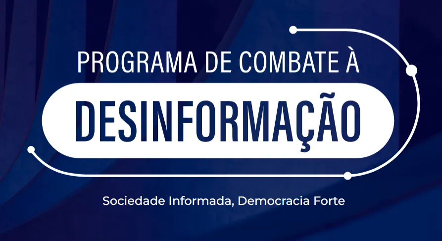
O CRIACOM colabora desde 2021 com o Programa de Combate à Desinformação do Supremo Tribunal Federal, iniciativa que reúne instituições científicas e jurídicas no enfrentamento à disseminação de informações falsas no Brasil. Conecta as pesquisas do laboratório — sobre fake news, persuasão, vieses de atribuição e aceitação de conteúdos falsos — ao esforço institucional de embasar políticas públicas em evidências científicas. «Sociedade Informada, Democracia Forte.»
Site do programa ↗Desde 2022, o CRIACOM integra o Grupo de Trabalho de Pesquisa Teórica em Análise do Comportamento da ANPEPP — Associação Nacional de Pesquisa e Pós-Graduação em Psicologia. A participação consolida a inserção do laboratório no debate teórico e conceitual da Análise do Comportamento em âmbito nacional, articulando as pesquisas do CRIACOM com a comunidade mais ampla da Psicologia científica brasileira.
Ver o GT na ANPEPP ↗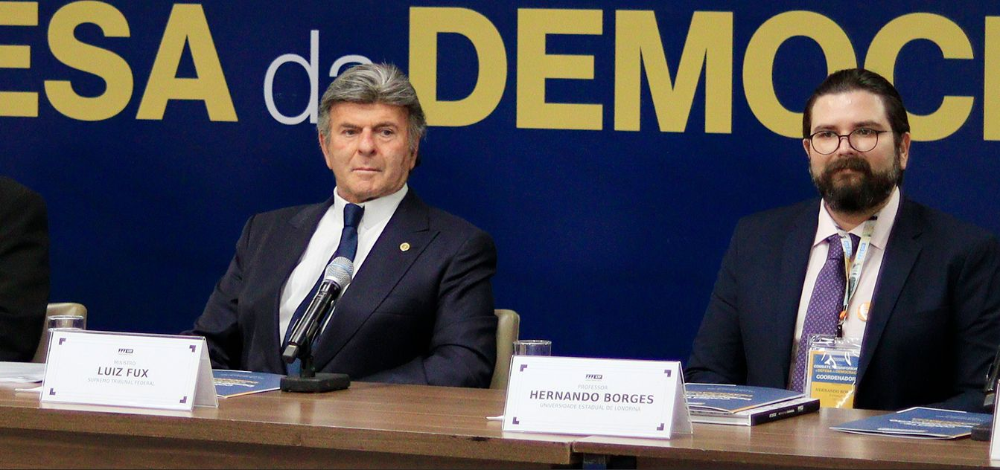
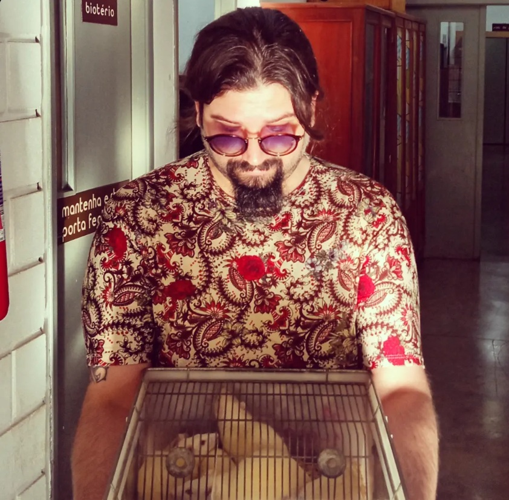
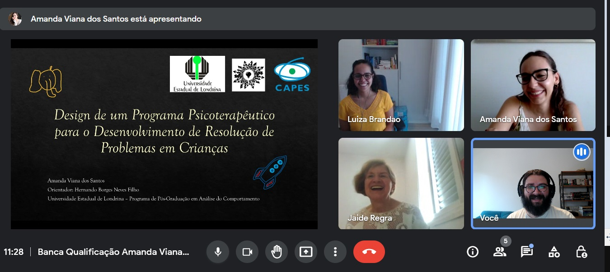


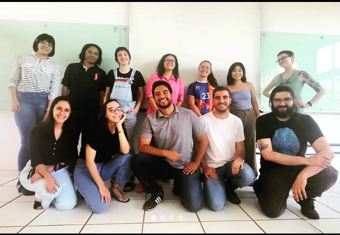
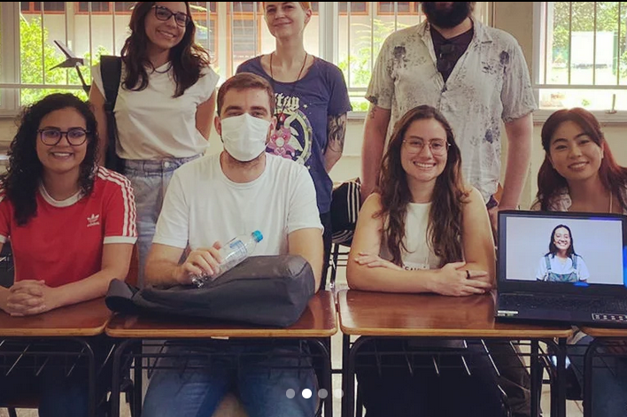
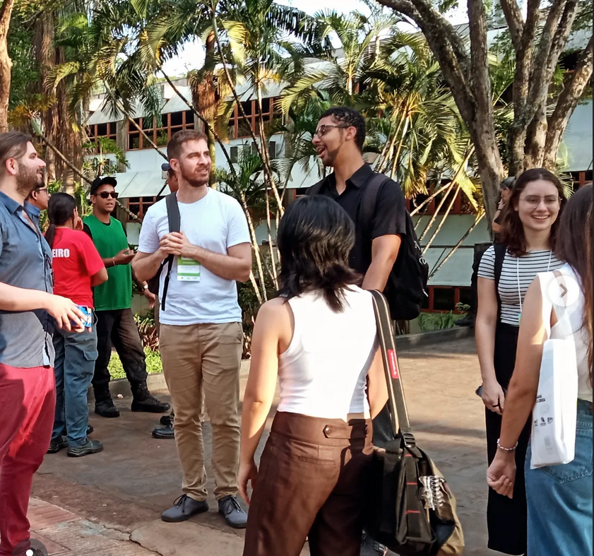
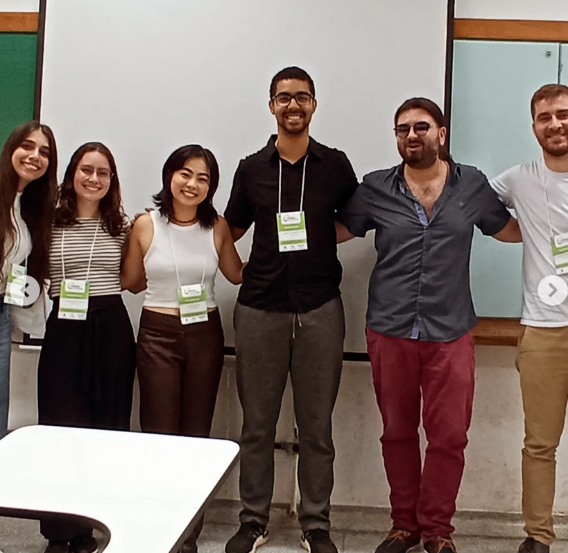
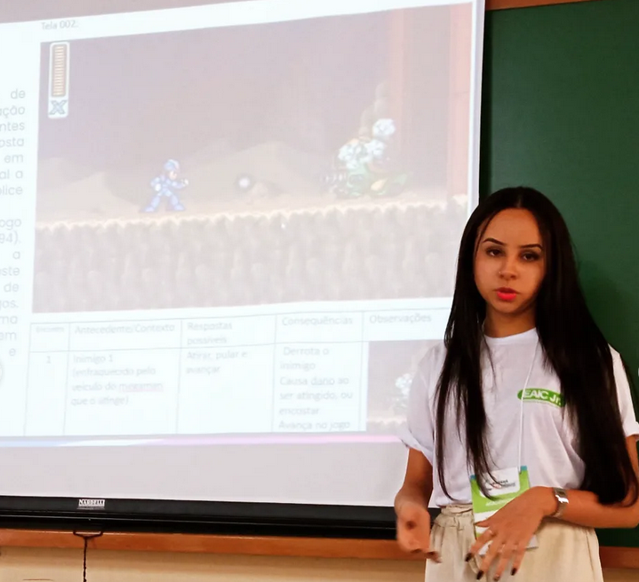


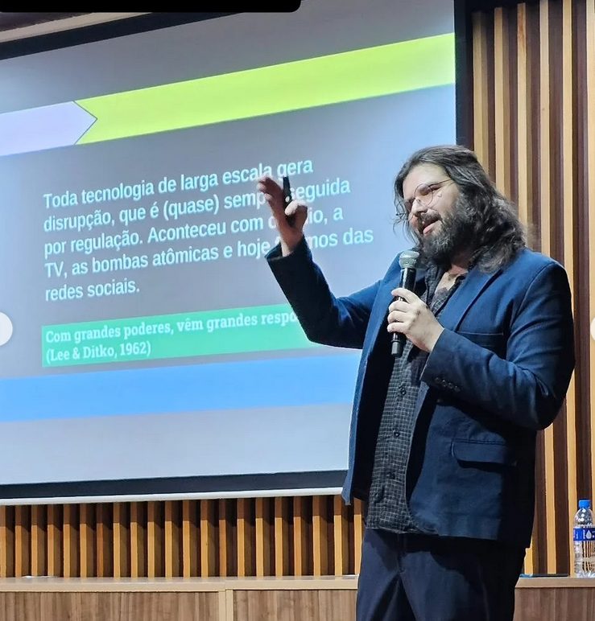